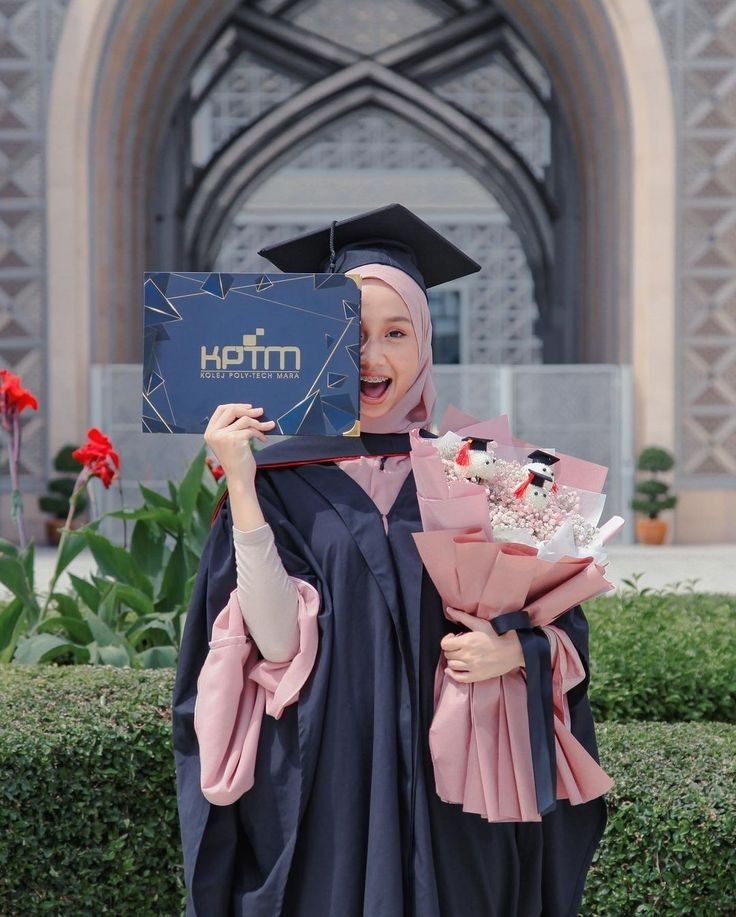

Ohreechan Editorial Team · Photography Journal
5 Pose Simpel untuk Foto Wisuda agar Terlihat Natural dan Menarik

Wisuda merupakan salah satu momen penting dalam perjalanan pendidikan. Mengabadikannya melalui foto menjadi cara untuk menyimpan kenangan atas pencapaian bersama keluarga dan teman.
Memegang Ijazah atau Map Wisuda
Pegang map wisuda di depan tubuh sambil menghadap kamera dengan ekspresi santai. Pose ini cocok untuk dokumentasi formal.
Melempar Topi Wisuda
Pose ini menggambarkan kebahagiaan setelah menyelesaikan pendidikan. Fotografer perlu memperhatikan waktu pengambilan gambar karena gerakannya berlangsung cepat.
Berfoto Bersama Keluarga
Ambil foto bersama orang tua atau keluarga dengan pose berdiri berdampingan atau saling memberikan ekspresi bahagia.
Foto Bersama Sahabat
Abadikan cerita bersama teman seangkatan melalui pose berjejer, menunjukkan map wisuda, atau berekspresi ceria.
Mengambil Foto dari Sudut Berbeda
Cobalah foto dari samping, saat berjalan menggunakan toga, atau ketika melihat gedung kampus. Sudut berbeda membuat koleksi lebih beragam.
Kesimpulan
Pose wisuda tidak harus rumit. Ekspresi nyaman, pencahayaan, dan pemilihan lokasi yang tepat dapat membantu menghasilkan foto menarik.
← Back to Articles